ERP d'exploitation pour entreprises de déménagement : clients, prestations, équipes, flotte, garde-meuble, facturation et rapports.
Analyse de la version déployée, dictionnaires de données, parcours utilisateurs, audit de maturité et feuille de route.
Produit
DSL-Déménagements
Nature du document
Dossier produit complet
Version analysée
Déploiement du 5 novembre 2026
Périmètre
11 écrans · 7 tables · 5 rapports
Stack
React · Vite · Supabase
Application
blueviolet-fox-642747.hostingersite.com
DSL-Déménagements · Spécification produit
16 chapitres · Document de référence
Sommaire
Seize chapitres, de la vision produit au guide d'intégration de la vidéo. Les chapitres 05 et 07 constituent le cœur de la spécification fonctionnelle.
Comprendre le produit
01Résumé exécutifFiche d'identité, chiffres clés, périmètre réel, ce que le produit fait et ne fait pasStratégie
02Contexte et problème métierDouleurs terrain, promesse, principes de conceptionStratégie
03Utilisateurs et rôlesPersonas, matrice des droits théorique et réalité de l'accèsProduit
04Cartographie fonctionnelleLes 11 modules, la navigation, le cycle de vie de la donnéeProduit
Spécification fonctionnelle
05Analyse module par module11 modules : objectif, fonctions, dictionnaire de données, règles, limitesCœur
06Parcours utilisateursCommercial, exploitation, direction, mise en routeCœur
07Modèle de données7 tables, dictionnaires de champs, relations, persistance, anomaliesCœur
Conventions de lecture
Les montants sont exprimés en euros dans l'application, avec un paramétrage de TVA à 20 % par défaut. Les chemins commençant par / désignent des routes de l'application. Les statuts « Complet », « Fonctionnel », « Partiel » et « Phase 2 » sont définis au chapitre 12. Les captures proviennent de la version déployée le 5 novembre 2026, alimentée par un jeu de démonstration.
01 · Résumé exécutif
Vue d'ensemble
DSL-Déménagements est un ERP métier pour entreprises de déménagement : clients et sites, prestations, équipes, flotte, garde-meuble, facturation, calendrier et rapports dans une interface unique, adossée à Supabase.
1.1Fiche d'identité du produit
Nom affiché dans l'application
DSL-Déménagements
Nature
Application web mono-page (SPA) d'exploitation, avec base gérée
Métier couvert
Déménagement particulier et professionnel, transfert d'entreprise, garde-meuble, location de monte-meuble
Relances de facture automatiques par e-mail ou SMS.
Envoi WhatsApp réellement branché à un service.
Portail client et application mobile terrain.
Lecture honnête
Le produit est un outil d'exploitation sérieux : la chaîne client → prestation → facture → rapport fonctionne et les écrans sont denses, cohérents et imprimables. Les manques ne sont pas cosmétiques : ils portent sur l'isolation des données, la prévention des doubles réservations et la fiabilité du mode de démonstration. Ces trois points conditionnent une commercialisation multi-clients.
02 · Contexte et problème métier
Pourquoi ce produit existe
Une entreprise de déménagement pilote simultanément des clients, des équipes, des camions, des boxes et des factures. La plupart le font encore avec un tableur, un carnet et WhatsApp.
2.1Les douleurs du terrain
Douleur
Manifestation concrète
Réponse apportée
Double saisie
Le client est créé dans le tableur, recopié dans le devis, puis dans la facture. Une correction n'est jamais propagée.
Une fiche client unique réutilisée par les prestations, les factures et les boxes.
Planning invisible
Personne ne sait si l'équipe B est libre jeudi, ni si le 30 m³ est en maintenance.
Calendrier des prestations et disponibilité des véhicules et des employés.
Garde-meuble flou
Des boxes occupés dont la fin de contrat est oubliée, donc non refacturés.
Boxes avec dates de début et de fin, statut et notification activable.
Facturation tardive
La facture part une semaine après le déménagement, quand elle part.
Facture rattachée à la prestation, numérotée et imprimable immédiatement.
Pilotage à l'aveugle
Le dirigeant découvre son chiffre d'affaires en fin de mois.
Tableau de bord quotidien et cinq rapports exportables.
2.2La promesse
Un seul outil, du premier appel à l'encaissement : le client entre une fois, la prestation se planifie, l'équipe et le véhicule se mobilisent, le box s'assigne, la facture se génère et le rapport se lit. Aucune information ne devrait avoir à être saisie deux fois.
2.3Principes de conception
Densité maîtrisée
Des tableaux compacts, triables et paginés, pensés pour un écran de bureau utilisé toute la journée — pas pour une page marketing.
Langage métier
Les libellés parlent déménagement : prestation, garde-meuble, monte-meuble, chef d'équipe. Le jargon technique reste dans le code.
Sortie papier
Chaque objet important s'imprime : fiche de prestation pour l'équipe, facture pour le client, calendrier pour le dépôt.
03 · Utilisateurs et rôles
Qui utilise l'outil, et avec quels droits
Quatre profils métier se partagent l'application. Techniquement, deux niveaux seulement sont distingués : super-administrateur et utilisateur authentifié.
3.1Personas
Persona
Usage principal
Écrans fréquents
Besoin dominant
Gérant / direction
Piloter l'activité et arbitrer
Tableau de bord, rapports, facturation
Voir la marge et les impayés
Responsable d'exploitation
Planifier les chantiers
Prestations, calendrier, employés, véhicules
Éviter les collisions de planning
Assistant administratif
Facturer et relancer
Clients, facturation, stockage
Ne rien oublier à facturer
Chef d'équipe
Exécuter sur le terrain
Fiche de prestation imprimée
Savoir où, quand, avec qui
3.2Matrice des droits
Capacité
Super-admin
Utilisateur authentifié
Non authentifié
Accéder au tableau de bord et aux modules
Oui
Oui
Redirigé vers /login
Créer / modifier / supprimer une prestation
Oui
Oui
Non
Émettre et imprimer une facture
Oui
Oui
Non
Gérer les employés et les véhicules
Oui
Oui
Non
Consulter les rapports financiers
Oui
Oui
Non
Gérer les comptes et les rôles
Indicateur présent, écran absent
Non
Non
Cloisonner les données par entreprise
Non implémenté : toutes les lignes sont visibles par tout compte authentifié.
Écart entre le discours et le code
L'interface affiche un badge « Super Admin » et charge profiles.is_super_admin, mais aucune route ni aucun bouton n'est réellement réservé à ce rôle. La distinction est aujourd'hui décorative : elle doit devenir une matrice de permissions appliquée côté interface et côté base.
04 · Cartographie fonctionnelle
Vue d'ensemble des modules
Onze modules regroupés en trois familles : exploitation, administration, pilotage. La navigation latérale les expose dans l'ordre du flux de travail.
4.1Navigation
Entrée de menu
Route
Rôle dans le flux
Table principale
Dashboard
/dashboard
Synthèse du jour, alertes, accès rapide
agrégats
Sites Clients
/sites-clients
Référentiel clients et adresses
clients
Stockage
/stockage
Boxes de garde-meuble et échéances
box_stockage
Prestations
/prestations
Cœur du métier : interventions planifiées
prestations
Employés
/employes
Effectif, équipes, compétences
employes
Véhicules
/vehicules
Flotte, état, maintenance
vehicules
Facturation
/facturation
Factures, TVA, statuts de paiement
factures
Calendrier
/calendrier
Vue mensuelle des interventions
prestations
Rapports
/rapports
Analyse et export
agrégats
Profil
/profil
Compte et sécurité
profiles
Paramètres
/parametres
Notifications, apparence, langue
profiles
Connexion
/login
Porte d'entrée
auth
4.2Cycle de vie de la donnée
01
Client
Créé dans Sites Clients avec adresse, contact, téléphone et e-mail.
02
Prestation
Relie le client, un type, une date, une équipe, un véhicule et un montant.
03
Exécution
Le calendrier et la fiche imprimée pilotent l'intervention.
04
Facture
Reprend le client et la prestation, applique la TVA, suit le paiement.
Un schéma en étoile
Presque tout converge vers deux tables : clients (qui possède les sites et les boxes) et prestations (qui porte la date, l'équipe, le véhicule et la facture). Toute évolution du modèle doit préserver cette lisibilité.
05 · Analyse module par module
Spécification fonctionnelle détaillée
Chaque module est décrit par son objectif, ses fonctions réelles, ses champs, ses règles et ses limites constatées dans la version déployée.
MODULE 01
Tableau de bord
La journée de l'exploitation en un écran
DashboardKPIMode Démo
Objectif. Donner en moins de dix secondes la température de l'entreprise : combien on a facturé ce mois, combien de clients sont entrés, combien de prestations sont planifiées cette semaine et combien de factures attendent. Puis enchaîner sur ce qui se passe aujourd'hui.
Fonctions
Quatre indicateurs : chiffre d'affaires du mois, nouveaux clients, prestations planifiées dans la semaine, factures en attente.
Planning du jour : liste des prestations datées du jour, avec client, type et horaire.
Panneau d'alertes : facture en retard, maintenance véhicule due aujourd'hui ou demain.
Bascule Mode Démo / données réelles, active par défaut à la première ouverture.
Rafraîchissement automatique des données toutes les cinq minutes.
Règles de calcul
Indicateur
Source
Règle
Chiffre d'affaires (mois)
factures
Somme des montants TTC des factures dont la date d'émission tombe dans le mois courant.
Nouveaux clients
clients
Nombre de fiches créées sur la période affichée.
Prestations planifiées
prestations
Prestations dont la date est comprise dans la semaine courante.
Factures en attente
factures
Statut « En attente » ou « Partiellement payée ».
Limite constatée
En Mode Démo, les quatre indicateurs affichent des valeurs figées (12 345 €, 23, 15, 8) et le planning du jour peut rester vide alors que des prestations de démonstration existent. Le bandeau « Mode Démo » est le seul signal : un utilisateur peut prendre ces chiffres pour sa réalité.
MODULE 02
Sites clients
Le carnet d'adresses qui alimente tout le reste
CRUDRecherchePagination
Objectif. Tenir le référentiel des clients et de leurs sites d'intervention. Chaque fiche contient l'adresse exacte, le contact sur place et les coordonnées, réutilisés ensuite dans les prestations, les factures et les boxes.
Fonctions
Liste paginée avec recherche instantanée sur le nom, l'adresse, le contact, le téléphone et l'e-mail.
Tri par colonne et sélection multiple.
Création et modification par formulaire modal.
Suppression avec boîte de confirmation.
Compteur de clients en tête de page.
Dictionnaire de champs — clients
Champ
Type
Contenu
Obligatoire
nom
texte
Raison sociale ou nom du particulier
Oui
contact
texte
Personne à joindre sur place
Non
telephone
texte
Numéro principal, format local libre
Oui
email
texte
Adresse de facturation
Non
adresse
texte
Adresse complète du site
Oui
ville
texte
Ville du site, utilisée pour les boxes
Non
Verdict. Module complet et solide. Deux manques : pas d'import CSV pour reprendre un fichier existant, pas de détection de doublons sur le nom ou le téléphone.
MODULE 03
Prestations
Le cœur du métier, de la demande à l'intervention
PrestationsPlanningImpression
Objectif. Décrire une intervention : qui, où, quand, combien de temps, avec quelle équipe, pour quel montant. C'est l'objet central de l'application, celui dont dépendent le calendrier, la facturation et les rapports.
Fonctions
Liste triée par date décroissante, avec recherche et filtres.
Création et modification avec sélection du client existant ou saisie libre.
Détail complet en panneau latéral, actions Modifier, Voir les détails, Imprimer, Supprimer.
Fiche de prestation imprimable, prête à remettre au chef d'équipe.
Types et statuts
Types de prestation
Déménagement Particulier
Transfert Entreprise
Garde-meuble
Location Monte-Meuble
Autre
Statuts du cycle de vie
confirmee
Confirmée
en_cours
En cours
terminee
Terminée
reportee
Reportée
annulee
Annulée
Dictionnaire de champs — prestations
Champ
Type
Contenu
client_id
uuid
Référence vers clients
nom_client
texte
Nom figé au moment de la création
type_prestation
énumération
Un des cinq types ci-dessus
date_prestation
date + heure
Début de l'intervention
time_prestation
texte
Horaire affiché au format HH:MM
duree_estimee
nombre
Durée en heures
statut
énumération
Statut du cycle de vie
nombre_employes
nombre
Effectif total affecté
nombre_manutentionnaires
nombre
Dont manutentionnaires
montant_ht
numérique
Montant hors taxes
details_prestation
texte long
Contraintes, volume, étage, ascenseur
Défaut d'affichage identifié
Dans la liste, la colonne Statut rend la clé brute de la base (en_cours, terminee) au lieu du libellé français. Le détail affiche parfois le libellé correct : la table de correspondance n'est pas appliquée au même endroit. Correction à prévoir en phase 1.
MODULE 04
Stockage & garde-meuble
Chaque mètre cube compte
StockageÉchéancesWhatsApp
Objectif. Suivre les boxes de stockage par ville : capacité, client assigné, dates de contrat et statut d'occupation. C'est le lien entre un déménagement et un revenu récurrent.
Fonctions
Liste des boxes avec ville, espace, client, dates et statut.
Statuts Vide, Occupé et Réservé, avec code couleur.
Assignation d'un client en un clic et notes libres.
Notification de fin de contrat activable par box.
Indicateur d'occupation globale du parc.
Dictionnaire de champs — box_stockage
Champ
Type
Contenu
nom_box
texte
Identifiant lisible du box (Box A-01)
ville
texte
Site de stockage
espace
texte
Volume disponible en m³
client_id
uuid
Client locataire, nullable
date_debut
date
Début du contrat de garde-meuble
date_fin
date
Fin prévue, déclenche l'alerte
notifications_active
booléen
Active le rappel de fin de contrat
statut
énumération
Vide · Occupé · Réservé
Verdict. Le module est fonctionnel et bien pensé. L'envoi WhatsApp est un lien prérempli, pas une notification automatique : le libellé doit être corrigé ou l'intégration réalisée.
MODULE 05
Employés & équipes
Savoir qui est libre, qui sait faire quoi
RHÉquipesCompétences
Objectif. Constituer l'effectif mobilisable : poste, équipe, disponibilité, compétences et coût journalier. C'est la brique qui rend le planning crédible.
Fonctions
Fiche employé avec nom, poste, équipe, disponibilité et compétences.
Sept postes paramétrés, du chef d'équipe au superviseur.
Salaire journalier et masse salariale agrégée.
Date d'embauche et statut actif / archivé.
Compteurs : effectif total, disponibles, occupés, en congé.
Verdict. Bonne base RH. Il manque le pointage des heures réelles, la gestion des congés et le lien direct entre une prestation et les employés nominativement affectés : aujourd'hui la prestation ne stocke qu'un nombre.
MODULE 06
Véhicules & maintenance
La flotte ne tombe jamais en panne sans prévenir
FlotteMaintenanceAlertes
Objectif. Connaître à tout instant la capacité disponible, l'état de chaque véhicule et la prochaine échéance d'entretien, pour ne pas découvrir une panne le matin du chantier.
Statut de disponibilité : Disponible, En mission, En maintenance.
Date de prochaine maintenance et alerte automatique à J et J+1.
Notes d'entretien et historique simple.
Règle d'alerte
À chaque chargement du tableau de bord, l'application compare la date de prochaine maintenance de chaque véhicule à la date du jour. Si l'échéance est aujourd'hui, une alerte de niveau warning est levée ; si elle est demain, une alerte info. Ces alertes remontent dans le panneau « Alertes et Notifications ».
Verdict. Module propre et utile. Il manque le coût réel d'exploitation (carburant, entretien, péages) et l'affectation nominative d'un véhicule à une prestation.
MODULE 07
Facturation
Du bon de commande à l'encaissement
FacturationTVA 20 %PDF
Objectif. Transformer une prestation réalisée en facture numérotée, puis suivre son règlement jusqu'à l'encaissement.
Fonctions
Numérotation lisible (FA-AAAA-NNNN), date d'émission et date d'échéance.
Montant HT, taux de TVA et montant TTC calculé automatiquement.
Cinq statuts : Payée, En attente, En retard, Partiellement payée, Annulée.
Rattachement à un client et à une prestation.
Impression PDF via le navigateur, sans service tiers.
Règle de calcul du TTC
TTC = montant_ht + (montant_ht × taux_tva)
// taux_tva par défaut : 0.20 — modifiable facture par facture// le montant TTC est recalculé à l'affichage, jamais stocké
Point de vigilance
Le montant TTC n'est pas persisté : il est recalculé à chaque lecture à partir de montant_ht et taux_tva. C'est sain pour l'intégrité, mais toute modification du taux après émission réécrit l'historique. Une facture émise doit figer ses montants.
MODULE 08
Calendrier des prestations
Voir la semaine avant qu'elle n'arrive
CalendrierFullCalendarImpression
Objectif. Offrir une lecture temporelle de l'activité : ce qui est prévu, ce qui est en cours, ce qui a été reporté ou annulé.
Fonctions
Vue mensuelle avec navigation mois précédent / suivant.
Événements colorés par type de prestation.
Panneau de détail des interventions du jour sélectionné.
Création d'un événement libre pour un imprévu.
Impression du calendrier pour l'affichage au dépôt.
Verdict. Module lisible et efficace. Il manque les vues par équipe et par véhicule, qui sont précisément ce qu'un exploitant cherche quand il doit arbitrer.
MODULE 09
Rapports & analytique
Les chiffres qui déclenchent une décision
Analytique5 rapportsExport
Objectif. Passer du suivi quotidien à la décision : où part le chiffre d'affaires, quelles équipes sont surchargées, quels véhicules dorment.
Les cinq rapports
Rapport
Contenu
Décision associée
Résumé financier
Chiffre d'affaires, encaissements, impayés sur 30 jours
Trois sorties sont proposées pour chaque rapport : CSV (téléchargement), Excel (fichier XLS) et PDF (impression navigateur). Les indicateurs se recalculent sur une fenêtre glissante de 30 jours et une vue comparative par site est disponible.
Verdict. Le module le plus mature après la facturation. Il manque les périodes personnalisées, la marge réelle (coûts vs recettes) et l'export planifié par e-mail.
MODULE 10
Profil & paramètres
Un compte, des préférences, une trace
ProfilThèmeJournal
Objectif. Permettre à chaque utilisateur de gérer son compte et son environnement de travail, et garder une trace des actions sensibles.
Fonctions
Photo de profil, nom, e-mail et téléphone.
Changement de mot de passe.
Thème clair, sombre ou système.
Langue française ou anglaise.
Notifications activables et journal d'activité.
Promesse non tenue
Les cases « 2FA », « SMS » et « WhatsApp » existent dans les paramètres mais ne sont reliées à aucun service d'envoi ni à aucun mécanisme d'authentification à deux facteurs. Elles doivent être retirées ou implémentées : une case cochée qui ne fait rien est un risque de confiance.
MODULE 11
Connexion
Une porte d'entrée unique
AuthSupabaseSession
Objectif. Authentifier l'utilisateur et charger son profil applicatif avant d'ouvrir l'application.
Fonctions
Connexion par e-mail et mot de passe via Supabase Auth.
Chargement du profil depuis profiles : nom, téléphone, avatar, indicateur super-admin.
Avatar de secours généré si aucun n'est fourni.
Redirection vers /login en l'absence de session valide.
Déconnexion et changement de mot de passe.
Verdict. L'authentification est réelle et correctement déléguée. Le point à traiter n'est pas la connexion mais ce qui se passe après : l'autorisation et l'isolation des données.
06 · Parcours utilisateurs
Le flux réel, écran par écran
Quatre parcours structurent l'usage : vendre et qualifier, planifier et exécuter, facturer et relancer, piloter. Chacun est décrit par ses étapes et ses points de friction.
6.1Parcours commercial — du premier appel à la prestation
Étape
Écran
Action
Résultat attendu
1
Sites Clients
Rechercher le client par téléphone ou nom. S'il n'existe pas, créer la fiche avec l'adresse exacte du site.
Fiche client unique, réutilisable partout.
2
Prestations
Créer la prestation : type, date, heure, durée estimée, nombre d'employés et de manutentionnaires, montant HT, détails.
Intervention planifiée et visible au calendrier.
3
Calendrier
Vérifier visuellement la charge de la semaine et l'absence de doublon apparent.
Confirmation de la date au client.
4
Prestations
Imprimer la fiche de prestation.
Document papier pour le chef d'équipe.
Friction : la vérification de disponibilité réelle de l'équipe et du véhicule reste manuelle. L'application ne bloque pas une double affectation.
6.2Parcours exploitation — la journée du responsable
07:30
Ouvrir le dashboard
Lire le planning du jour, les alertes de maintenance et les factures en retard.
08:00
Arbitrer
Consulter Employés et Véhicules pour vérifier qui est disponible et quel camion est libre.
12:00
Ajuster
Passer une prestation en « En cours » ou « Terminée », reporter ou annuler si besoin.
18:00
Clôturer
Vérifier que toutes les prestations du jour sont terminées et facturables.
6.3Parcours administratif — facturer et relancer
Depuis Facturation, créer la facture en sélectionnant le client et la prestation associée.
Vérifier le montant HT, le taux de TVA et le TTC calculé.
Imprimer la facture au format PDF navigateur et l'envoyer au client.
Suivre le statut : En attente → Payée, ou En retard si l'échéance est dépassée.
Consulter le Résumé financier pour la liste des impayés.
6.4Mise en route d'une nouvelle entreprise
Créer le compte administrateur dans Supabase Auth.
Insérer la ligne correspondante dans profiles avec is_super_admin = true.
Paramétrer les employés, les équipes et les véhicules.
Créer les boxes de stockage par ville.
Saisir les clients existants et leurs sites.
Vérifier le taux de TVA par défaut et la numérotation des factures.
Désactiver le Mode Démo avant la première utilisation réelle.
07 · Modèle de données
Le socle
Sept tables PostgreSQL reliées par des clés étrangères simples. Le schéma est lisible et suffisant pour une mono-entreprise ; il lui manque la dimension tenant et quelques entités métier.
Profil applicatif lié au compte d'authentification.
7.3Anomalies de modélisation
Constat
Conséquence
Correction recommandée
Dénomination mixte prochaineMaintenance en camelCase au milieu de colonnes snake_case
Confusion dans les requêtes et les exports
Renommer en prochaine_maintenance avec migration
Aucune colonne tenant_id
Impossible d'isoler plusieurs entreprises
Ajouter la colonne et les politiques RLS
Prestation liée à un nombre d'employés, pas à des identifiants
Impossible de savoir qui était réellement affecté
Table de jonction prestation_employes
Aucune table de liaison prestation ↔ véhicule
La flotte n'est pas rattachée aux interventions
Table de jonction prestation_vehicules
Pas de table de devis ni de documents
Le cycle commercial amont est hors outil
Ajouter devis et documents
Montant TTC recalculé, jamais stocké
Une facture émise peut changer de montant
Figer les montants à l'émission
7.4Persistance et mode dégradé
La persistance nominale est assurée par Supabase (PostgreSQL + PostgREST). En cas d'indisponibilité de la base, plusieurs écrans retombent sur localStorage : les données restent visibles sur le poste mais ne sont ni partagées ni sauvegardées. Ce comportement est pratique pour une démonstration hors ligne ; en production, il crée deux sources de vérité et doit être désactivé ou explicitement signalé à l'utilisateur.
08 · Architecture technique
Sous le capot
Une application front compilée par Vite, servie en statique, qui parle directement à Supabase. Aucun serveur applicatif à maintenir, aucune API intermédiaire.
Supabase AuthE-mail / mot de passeProfil applicatifSuper-admin
Sorties
Fiche de prestationFacture PDFExport CSV / XLSCalendrier imprimable
8.2Routage
Route
Écran
Accès
/login
Connexion
Public
/dashboard
Tableau de bord
Authentifié
/sites-clients
Clients
Authentifié
/stockage
Boxes
Authentifié
/prestations
Prestations
Authentifié
/employes
Employés
Authentifié
/vehicules
Véhicules
Authentifié
/facturation
Factures
Authentifié
/calendrier
Calendrier
Authentifié
/rapports
Rapports
Authentifié
/profil
Profil
Authentifié
/parametres
Paramètres
Authentifié
8.3Performance et exploitation
Build
Compilation Vite en assets statiques hashés. Le déploiement consiste à remplacer le contenu du répertoire servi — aucune migration de serveur.
Chargement
Requêtes PostgREST parallèles au montage des écrans. Le dashboard rafraîchit ses données toutes les 300 secondes via un intervalle.
Résilience
Repli localStorage sur certains écrans, messages d'erreur et notification « Problème de connexion ». Pas de file d'attente de synchronisation.
09 · Design system
Dense, lisible, fait pour être utilisé debout
L'interface assume sa nature d'outil de travail : tableaux compacts, badges de statut, actions à portée de clic. Le thème sombre est disponible partout et le rendu reste net sur mobile.
Contrastes à vérifier sur les badges de statut en thème clair.
10 · Mode Démo et données de démonstration
Un choix produit à double tranchant
Le Mode Démo est activé par défaut. Il permet de découvrir le produit sans base, mais il mélange données factices et données réelles dans la même interface.
10.1Fonctionnement
Aspect
Comportement constaté
Activation
Active à la première ouverture ; un bandeau « Mode Démo » est affiché sur le tableau de bord.
Contenu
Clients, prestations, factures, véhicules, employés et boxes fictifs, cohérents entre eux.
Indicateurs
Valeurs figées : 12 345 € de chiffre d'affaires, 23 nouveaux clients, 15 prestations, 8 factures en attente.
Bascule
Un contrôle permet de revenir aux données réelles de la base.
Persistance
L'état du mode est conservé côté navigateur ; il ne suit pas l'utilisateur d'un poste à l'autre.
10.2Risques
Confusion possible
Un utilisateur qui se connecte pour la première fois voit des chiffres plausibles sans rapport avec son activité. Si le bandeau est manqué, il peut croire à un import de données ou à une erreur de facturation. Recommandation : désactiver le mode par défaut en production, ou afficher un filigrane sur chaque écran concerné.
Valeur réelle
Pour une démonstration commerciale, ce mode est un atout : il montre l'application remplie en trois secondes, sans préparer de jeu de données. Il faut simplement le traiter comme un mode de présentation, pas comme un état par défaut.
11 · Sécurité, données et conformité
Ce qui protège — et ce qui ne protège pas
La clé anonyme Supabase est publique par nature : toute la protection repose sur les politiques Row Level Security. Elles doivent être auditées avant toute mise en production.
11.1Surface d'attaque
Point
État
Analyse
Authentification
Solide
Déléguée à Supabase Auth, mots de passe hachés et gérés par le fournisseur.
Autorisation
Faible
Le badge super-admin n'est pas appliqué : tout compte authentifié accède à tout.
Isolation des données
Absente
Aucune colonne tenant, donc aucune séparation possible entre entreprises.
Politiques RLS
À auditer
Non vérifiables depuis le front. À contrôler table par table dans Supabase.
Secrets
Correct
Seule la clé anonyme est embarquée ; aucune clé de service dans le bundle.
Données personnelles
À cadrer
Nom, téléphone, e-mail et adresse des clients : base légale, durée de conservation et droit d'accès à documenter.
Sauvegarde
Fournisseur
Reposent sur Supabase ; aucune procédure de restauration documentée côté projet.
11.2Recommandations prioritaires
Écrire et tester les politiques RLS sur les sept tables, avec un jeu d'utilisateurs de test.
Ajouter tenant_id et le propager dans toutes les requêtes avant toute commercialisation multi-clients.
Appliquer la matrice de permissions côté interface et côté base, pas seulement en badge.
Figer les montants d'une facture à l'émission pour garantir l'intégrité comptable.
Documenter la conservation des données clients et la procédure d'export / suppression.
Retirer les cases 2FA, SMS et WhatsApp tant qu'elles ne sont pas opérationnelles.
12 · Audit de maturité
Notation par module
Échelle : Complet (utilisable tel quel), Fonctionnel (fonctionne, finitions manquantes), Partiel (parcours incomplet), Phase 2 (non implémenté).
12.1Notation
Module
État
Ce qui fonctionne
Ce qui manque
Tableau de bord
Complet
KPI, planning du jour, alertes, bascule démo/réel
Widgets personnalisables
Sites clients
Complet
CRUD, recherche, tri, pagination
Import CSV, détection de doublons
Prestations
Complet
CRUD, 5 types, 5 statuts, fiche imprimable
Libellés de statut en liste, devis
Stockage
Complet
Boxes, occupation, échéances, notes
Envoi WhatsApp réel, facturation récurrente
Employés
Complet
Fiches, équipes, compétences, masse salariale
Pointage, congés, affectation nominative
Véhicules
Complet
Flotte, états, maintenance, alertes
Coûts d'exploitation, affectation
Facturation
Complet
Numérotation, TVA, statuts, impression
Avoirs, relances, montants figés
Calendrier
Complet
Vue mois, détail jour, événements libres
Vues équipe et véhicule
Rapports
Fonctionnel
5 rapports, KPI 30 jours, exports
Périodes libres, marge réelle
Profil / paramètres
Fonctionnel
Compte, mot de passe, thème, langue
2FA et notifications réellement actives
Sécurité / rôles
Partiel
Authentification Supabase, profil chargé
RLS, permissions, isolation tenant
Multi-entreprise
Phase 2
—
Tenant, rôles fins, portail client
12.2Dette technique
Dette fonctionnelle
Statuts de prestation affichés en clé brute.
Mode Démo activé par défaut.
Cases de paramètres sans effet.
Deux sources de vérité avec le repli localStorage.
Pas de contrôle de conflit de planning.
Dette structurelle
Absence de dimension tenant.
Pas de tests automatisés ni d'intégration continue.
Nommage de colonnes incohérent (camelCase isolé).
Montants TTC non figés à l'émission.
Pas de journal d'audit serveur.
13 · Feuille de route
Trois phases, par ordre de valeur
Phase 1 fiabilise ce qui existe, phase 2 complète le métier, phase 3 ouvre le produit au multi-entreprise.
13.1Phase 1 — Fiabiliser (4 à 6 semaines)
Livrable
Critère d'acceptation
Politiques RLS sur les 7 tables
Un utilisateur A ne peut lire aucune ligne de l'entreprise B ; test automatisé fourni.
Libellés de statut de prestation
La liste affiche « En cours », jamais en_cours.
Mode Démo désactivé par défaut
À la première connexion, les chiffres affichés sont ceux de la base.
Détection de conflit
Une prestation qui chevauche une autre pour la même équipe ou le même véhicule déclenche un avertissement.
Montants de facture figés
Modifier le taux de TVA ne change plus une facture déjà émise.
13.2Phase 2 — Enrichir (2 à 3 mois)
Devis, conversion en prestation et acceptation client.
Photos et documents de chantier attachés à la prestation.
Pointage des heures réelles et gestion des congés.
Coûts véhicules : carburant, entretien, amendes.
Relances de facture par e-mail et rappels de garde-meuble.
Affectation nominative des employés et des véhicules à chaque prestation.
13.3Phase 3 — Passer à l'échelle (3 à 6 mois)
Isolation par tenant et rôles fins (direction, exploitation, admin, terrain).
Portail client : suivi de la prestation, documents, factures.
Application mobile terrain avec fiche de mission hors ligne.
Tableaux de bord par agence et consolidation groupe.
API publique et webhooks pour la comptabilité.
14 · Exploitation et déploiement
Mettre en ligne et tenir en ligne
Le produit est un site statique adossé à Supabase : le déploiement est simple, la vigilance porte sur la base et les sauvegardes.
14.1Environnements
Environnement
Hébergement
Usage
Production
Hostinger — site statique
Usage réel des utilisateurs
Recette
Hostinger — sous-domaine ou répertoire dédié
Validation avant mise en production
Base
Supabase — projet unique
Une base par environnement recommandée
14.2Procédure de mise en production
Exécuter npm run build et vérifier l'absence d'erreur TypeScript.
Contrôler que seules les variables publiques sont présentes dans le bundle.
Tester les parcours critiques sur l'environnement de recette.
Appliquer les migrations Supabase dans l'ordre, avec sauvegarde préalable.
Déployer les assets et vider le cache du CDN si applicable.
Vérifier la connexion, le chargement du dashboard et l'émission d'une facture test.
14.3Checklist de production
Politiques RLS écrites et testées sur les 7 tables.
Mode Démo désactivé par défaut.
Sauvegarde Supabase planifiée et restauration testée.
Compte super-admin nominatif, mots de passe uniques.
Taux de TVA et numérotation de facture validés avec la comptabilité.
Mentions légales et politique de confidentialité publiées.
Procédure de suppression d'un client documentée.
Supervision : alerte si le site ou la base ne répond plus.
15 · Guide d'intégration de la vidéo
La démonstration en trois minutes
La page descriptive réserve un cadre 16:9 prêt à recevoir une iframe. Ce chapitre fournit le storyboard et le script pour produire la vidéo.
15.1Spécifications techniques
Format
MP4 H.264, 1920 × 1080, 30 images/seconde
Durée cible
2 min 45 à 3 min 15
Intégration
Iframe 16:9 dans le bloc .video-wrap, attributs allowfullscreen et loading="lazy"
Audio
Voix off française, musique instrumentale discrète, sous-titres français
Données
Utiliser le Mode Démo ou un jeu de démonstration cohérent, jamais de données client réelles
15.2Storyboard
Plan
Écran
Action filmée
Message
01
Dashboard
Survol des quatre indicateurs, puis du planning du jour
« Voilà votre journée, en un écran. »
02
Sites clients
Recherche d'un client, ouverture de la fiche
« Le client n'est saisi qu'une fois. »
03
Prestations
Création d'un déménagement, choix du type et de la date
« La prestation relie tout le reste. »
04
Calendrier
Navigation dans le mois, ouverture du détail du jour
« La semaine se lit d'un coup d'œil. »
05
Employés
Filtre des disponibles, ouverture d'une fiche
« On sait qui est libre et qui sait faire quoi. »
06
Véhicules
État de la flotte, alerte de maintenance
« Le camion ne tombe plus en panne par surprise. »
07
Stockage
Assignation d'un box à un client, échéance
« Le garde-meuble devient un revenu suivi. »
08
Facturation
Création d'une facture, calcul du TTC, impression
« La facture part le jour du déménagement. »
09
Rapports
Résumé financier, changement de rapport, export
« Les chiffres qui déclenchent une décision. »
10
Mobile
Dashboard sur téléphone, menu replié
« L'essentiel reste lisible sur le terrain. »
11
Carton final
Logo DSL et accroche
« Du premier appel à la facture. »
15.3Script voix off (extrait)
« Une entreprise de déménagement, c'est des clients, des équipes,
des camions, des boxes et des factures. Souvent, tout cela vit
dans cinq outils différents.
DSL-Déménagements réunit ces cinq outils en un seul.
Le client entre une fois. La prestation se planifie. L'équipe et le
véhicule se mobilisent. Le box s'assigne. La facture se génère.
Et le soir, le dirigeant n'a plus à reconstituer sa journée :
elle est déjà là. »
16 · Annexes
Références
Routes, dépendances principales, inventaire des captures et glossaire métier.
16.1Dépendances principales
Paquet
Usage
react / react-dom
Interface
vite
Build et serveur de développement
typescript
Typage statique
tailwindcss
Styles utilitaires
@radix-ui/*
Primitives accessibles
@tanstack/react-table
Tableaux triables et paginés
@fullcalendar/*
Calendrier
recharts
Graphiques des rapports
react-hook-form / zod
Formulaires et validation
date-fns
Formatage des dates en français
@supabase/supabase-js
Auth et accès aux données
framer-motion
Animations d'interface
lucide-react
Icônes
16.2Inventaire des captures
Fichier
Écran
01-dashboard.jpg
Tableau de bord
02-sites-clients.jpg
Sites clients
03-stockage.jpg
Stockage
04-prestations.jpg
Prestations
05-employes.jpg
Employés
06-vehicules.jpg
Véhicules
07-facturation.jpg
Facturation
08-calendrier.jpg
Calendrier
09-rapports.jpg
Rapports
10-profil.jpg
Profil
11-parametres.jpg
Paramètres
12-login.jpg
Connexion
13-mobile-dashboard.jpg
Vue mobile
16.3Glossaire
Prestation
Intervention planifiée chez un client : déménagement, transfert, garde-meuble ou location de monte-meuble.
Garde-meuble
Service de stockage du mobilier du client dans un box, sur une durée contractuelle.
Monte-meuble
Engin de levage permettant de faire passer du mobilier par une fenêtre ou un balcon.
Box
Compartiment de stockage identifié, rattaché à une ville et à un volume.
Manutentionnaire
Membre d'équipe affecté au portage et au chargement.
Chef d'équipe
Responsable du chantier sur place, destinataire de la fiche de prestation.
TTC
Montant toutes taxes comprises, calculé à partir du HT et du taux de TVA.
RLS
Row Level Security : politiques PostgreSQL qui filtrent les lignes visibles par utilisateur.
16.4Captures de l'application
Les treize captures ci-dessous proviennent de la version déployée, alimentée par un jeu de démonstration cohérent. Elles illustrent l'état réel de l'interface, sans retouche.
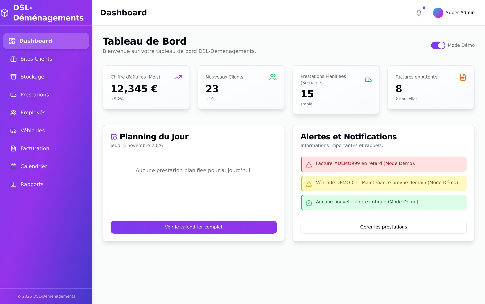
Tableau de bord — KPI, planning du jour, alertes
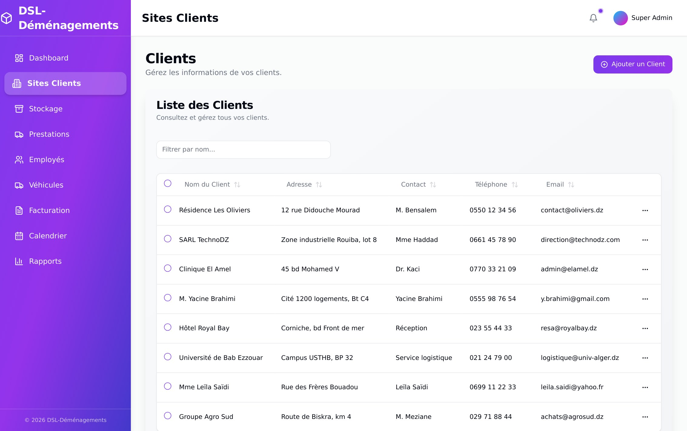
Sites clients — liste, recherche, actions
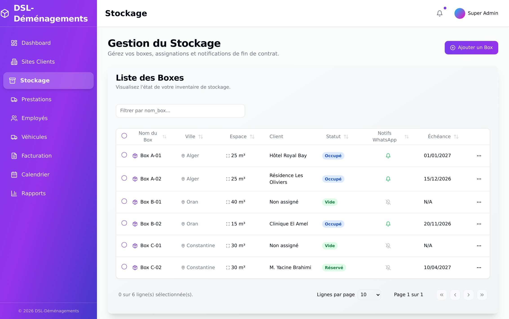
Stockage — boxes, occupation, échéances
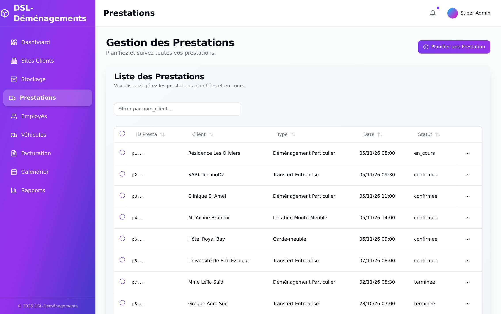
Prestations — liste datée et statuts
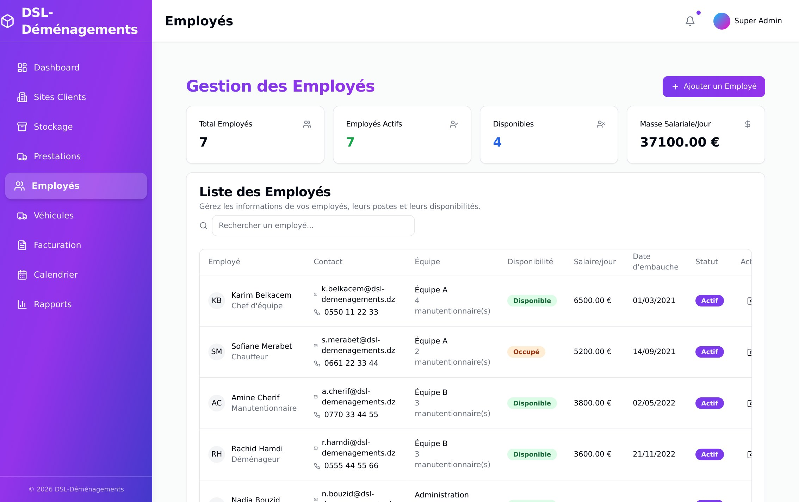
Employés — effectif, équipes, disponibilité
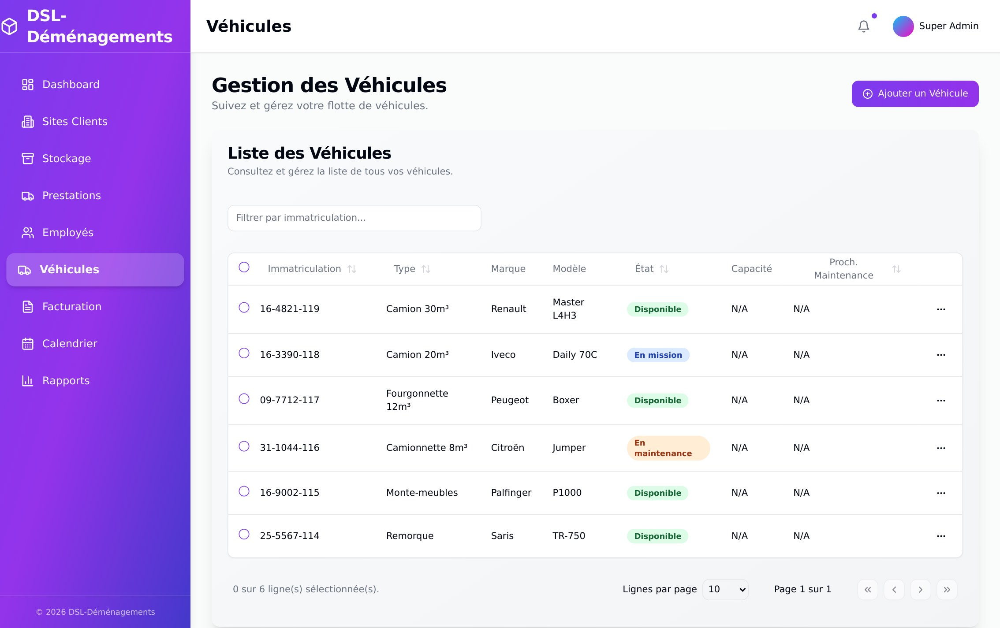
Véhicules — flotte, état, maintenance
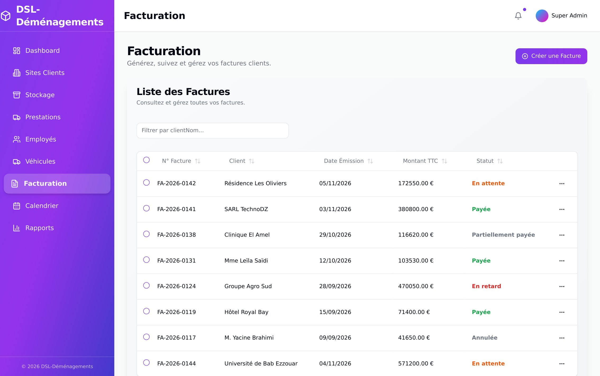
Facturation — numéros, TTC, statuts de paiement
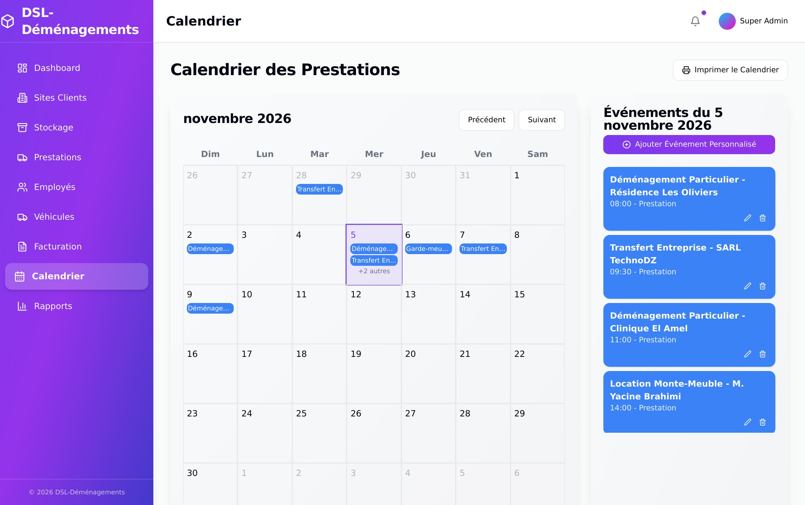
Calendrier — vue mois et détail du jour
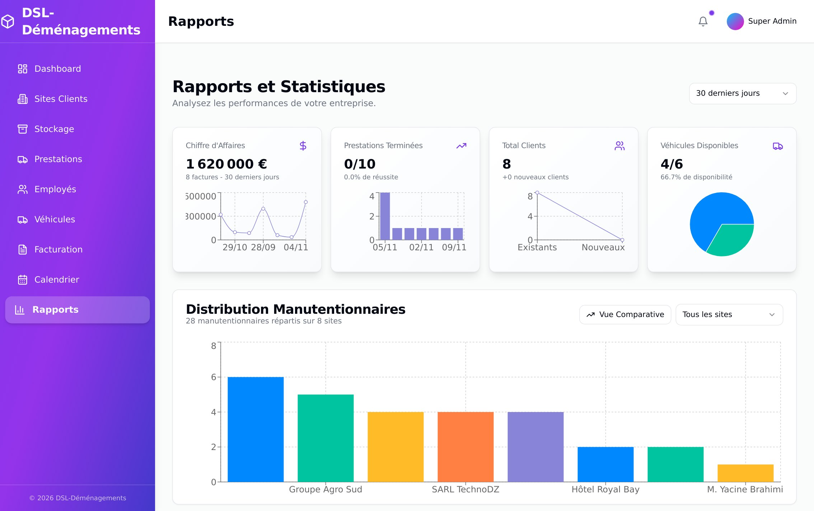
Rapports — KPI 30 jours, graphiques, export
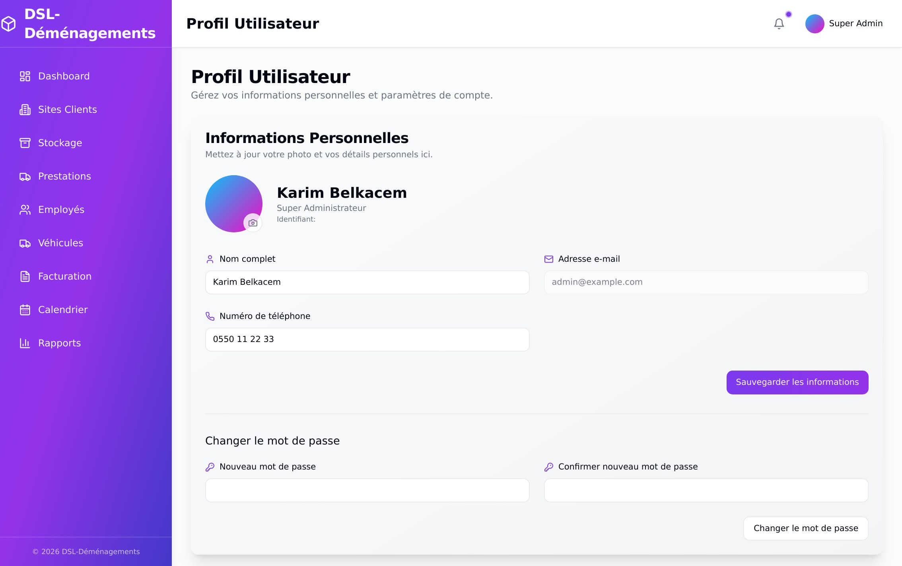
Profil — compte et sécurité
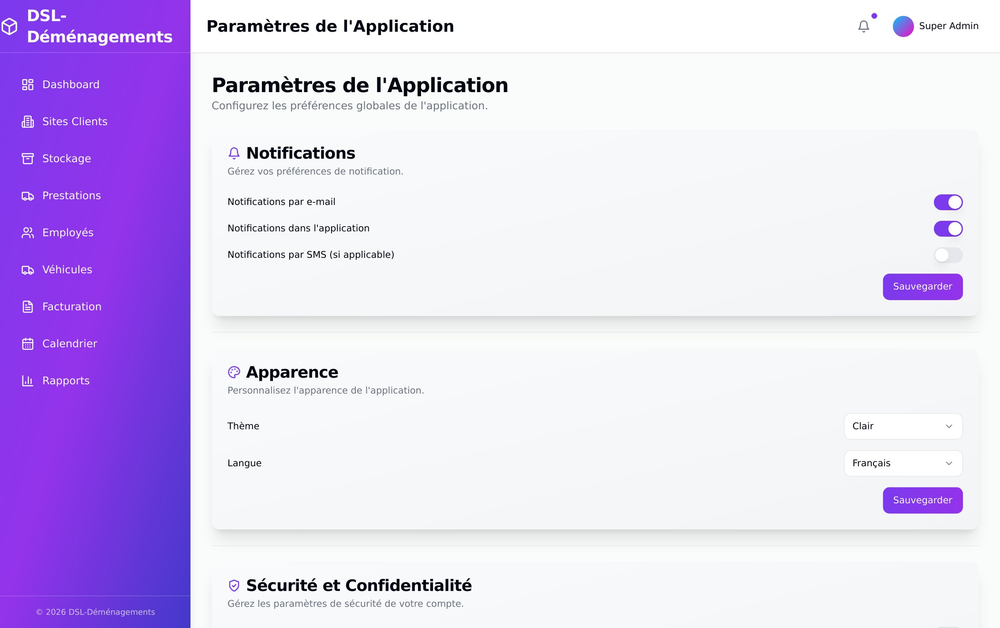
Paramètres — notifications, apparence, langue
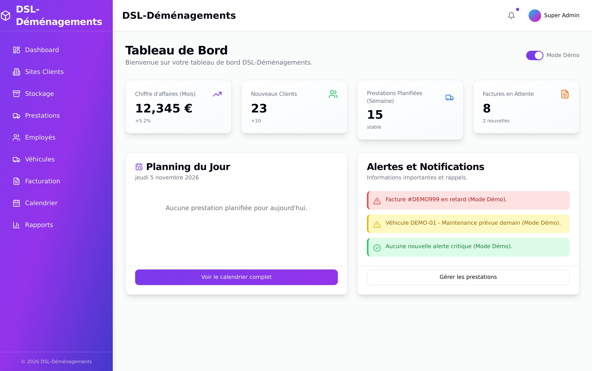
Connexion — authentification Supabase
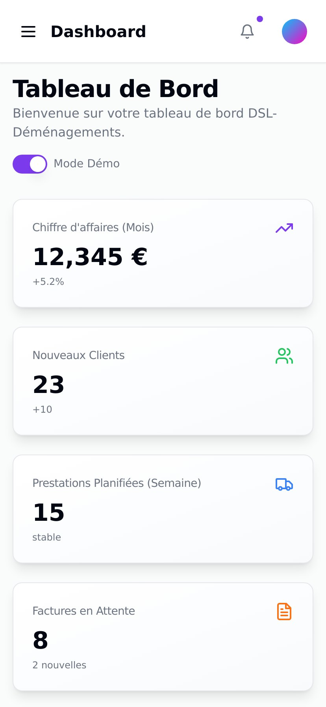
Vue mobile — 414 px, navigation repliée
Traçabilité
Document établi le 5 novembre 2026 à partir de l'analyse du bundle déployé sur blueviolet-fox-642747.hostingersite.com, des routes et des tables réellement présentes, et de captures réalisées sur la version en ligne avec un jeu de démonstration. Les libellés cités sont ceux de l'interface.